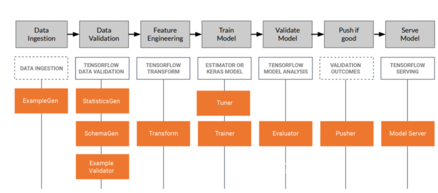

Analytics is the art of exploiting data to transform how your business operates. These analytical capabilities can be categorised as:
- Descriptive - Generally delivered through a dashboard, descriptive analytics enable you to report on what has happened.
- Diagnostic - Leveraging statistical analysis diagnostics enable you to better understand the root cause of an event.
- Predictive - Predictive analytics uses historic data to forecast what is likely to occur in the future.
- Prescriptive - Taking this a step further, prescriptive analytics suggest the optimal action to be taken to achieve a desired outcome.
- Cognitive - Taking the human out of the loop, cognitive analytics learn what actions to take to achieve a stated objective based on defined reward mechanism.
Find out more about the analytical tools EMPEDATA use to deliver actionable insights in the blocks below or get in touch to arrange a private discussion to explore how we can help deliver your analytical needs.
Business intelligence
Typically used for more straightforward querying and reporting of data, business intelligence tools combine data from a broad range of sources to report business metrics via intuitive dashboards. These professional looking reports, that can be generated with little, or no, knowledge of coding provide a great way to enable data driven decision making across your organisation and democratise your analytical capabilities. Popular business intelligence solutions include Microsoft's PowerBI and Tableau produced by Salesforce.
Mathematical modelling
Mathematical modelling covers a variety of techniques, all of which are fundamentally about building a representation of the provided data with which to conduct analysis and infer relationships between variables. The 5 key mathematical modelling disciplines we consider are:
- Mixed Integer Linear Programming (MILP) - By defining the variables, constraints and objective function of a problem the MILP algorithms identify the optimum solution for a given problem. The Gurobi web site provides some fascinating case studies where MILP has been used to great effect and, at a significant cost, is probably the most capable optimisation software available. Open-source Python alternatives such as Pyomo and Scipy can provide similar capabilities, without the expense.
- Econometrics - The goal of econometrics is to understand cause-effect and statistical significance of relationships, often within the scope of policy evaluation. This information is invaluable when seeking to support recommended actions with empirical evidence. Our preferred Python library when performing econometric analysis is statsmodels
- Network Analytics - Networks, or graphs, provide a way to infer the level of connectivity and influence between objects. Examples of these objects include, people, companies in a supply chain and transport networks as exploited by the Google search engine, Facebook social network and various satnav route planning services. NetworkX is an intuitive Python package with which to create and study networks but for larger scale analysis a dedicated Graph database, such as neo4j, provide significant performance benefits.
- Time series analysis - Involves using ARIMA and ETS techniques to project forward the observed seasonality and underlying trends in a dataset to predict future events. Again, our preferred Python library for performing this type of analysis is statsmodels.
- Discreet Event Simulation - Sometimes the best way to understand a phenomenon is to build a simulation. Running the simulation with a range of statistically controlled input parameters and performing a Montecarlo analysis to determine the likelihood of a variety of outcomes. Once understood optimisation algorithms can be applied to select the best mitigating actions to be taken. Simpy is a popular Python simulation library, although we generally prefer developing custom objects and generator functions to define a simulation environment and behaviours of actors within it.
Machine learning
Machine learning algorithms are used to predict an output value or classify an object based on the provided input variables. In contrast with mathematical modelling machine learning focuses on making the best fit, not in understanding the underlying causality. The main Python library for machine learning is Sci-kit learn, which enables a wide variety of machine learning algorithms to be trained and fitted to a given dataset, as well as providing pre-processing techniques and methods for comparing and validating parameters to simplify the process of selecting the model that gives the best results.

As shown in the above diagram, machine learning algorithms can be divided into 4 distinct categories.
Supervised learning - Covers models in which a labelled datasets is used to train algorithms to either classify or predict output values of a given dataset. As input data is fed into the model an error function serves to evaluate the quality of the model prediction and adjusts the weights accordingly to reduce the discrepancy. The algorithm then repeats this evaluation and optimisation process, updating weights until an accuracy threshold has been satisfied. Once derived, these model weights can then be applied to a previously unseen dataset to allow output predictions to be made.- Classification - These algorithms are used to identify which category an object belongs to. Commonly used techniques include Support vector machines, logistic regression, nearest neighbours and random forest.
- Regression- In contrast regression algorithms predict a specific value based on the provided inputs.
- Clustering - Automatically sorting similar objects into sets for applications such as customer segmentation using algorithms such as K-Means and spectral clustering
- Dimension reduction - Reducing the number of random variables enables complex multidimensional data to be more easily visualised and reduces the computational cost of processing. This approach forms the basis of collaborative filtering algorithms, used extensively in recommendation engine.
Deep learning
An artificial neural network (ANN) uses multiple layers between the inputs and outputs of a model to enable more complex relationships to be inferred. While ANN's can be applied to all types of dataset, they truly excel when modelling complex entities such as images, sound and language, where the significance of a piece of data is a function of the datapoints around it. Popular libraries for implementing deep learning models include Tensorflow, developed by Google and Pytorch from Facebook.
The four main types of ANN we consider are:
- Convolutional Neural Networks - Used extensively for image processing a CNN is able to reduce an image into a form suitable for processing, without losing features which are critical for obtaining a good prediction. Passing the image through a range of filters and aggregating the values assigned to cells enables low-level features such as edges, colour, gradient and orientation to be captured. These low-level features are then combined in subsequent layers to obtain a high-level understanding of the image content.
- Recurrent Neural Networks - Analyse sequences of data and are used extensively for language processing and applications to interpret streamed IOT sensor data. Pretrained libraries such as Spacy provide powerful pretrained models that can be used to identify different parts of speech, sentiment and word similarity directly of a given piece of text.
- Reinforcement Learning - Is a behavioural machine learning model that, instead of being trained using sample data, learns to maximise reward through experimentation. As the algorithm progressively learns the sequence of behaviours that return the most successful outcomes it devises a policy to deliver the optimal response to a given situation.
- Generative Adversarial Networks - Discover and learn the regularities or patterns in input data in such a way that the model can be used to generate new examples that plausibly could have been drawn from the original dataset. This technique has been used to translate photographs across domains, such as day to night or summer to winter, generate high-resolution versions of input images or even create new music, images and texts in the style of a particular artist.
Visualisation
The purpose of visualisation is to augment the human capabilities by representing a dataset in such a way that it helps people to carry out their tasks more effectively. In general, these tasks can be split into 2 categories:
- Presentation - Communicating known facts to a target audience.
- Discovery - Finding new knowledge through either helping form or confirm a hypothesis.
Data is conveyed through a mixture of marks and channels. A mark is a basic geometric element, point (1d), line (2d) and area (3d) used to depict an item or connection while the channels control the appearance of the marks to express both ordinal and categorical attributes. Examples of commonly used channels are shown in the diagram below.
The advantage of delivering visualisations over a web page is that it opens the option to make the images dynamic, using motion as an additional channel and allowing the user to manipulate the image to overcome some of the limitations of a traditional static image. Possible interactions include:
- Aggregating and filter information as required.
- Panning and rotating around a space to explore.
- Zooming and /or the use of a tooltip for closer inspection of specific data points.
- Linked charts to show correlation between attributes.
Regardless of the nature of the data or the purpose of the visualisation it is worth ensuring that the charts you create adhere to the design principals defined by Edward Tufte.
- Clear detailed and though labelling.
- Graphic effects should be proportional to the numerical quantities.
- Minimise the use of unnecessary ink distracting from the core data.
- Avoid cluttering charts with unnecessary.
For static charts matplotlib and seaborn are generally considered the standard Python visualisation libraries. As an alternative we also find plotnine, which is a Python implementation of a grammar of graphics, provides a powerful method of iteratively building complex and professional looking plots. For interactive plots plotly is our library of choice offering tooltips, filters, panning and zoom functionality as standard and can be easily integrated directly into a web application.
For a more comprehensive discussion of the art of effective data visualisation we recommend Visualization Analysis and Design By Tamara Munzner
Machine learning in production
Training a machine learning model is only a small part of the process involved in creating a productionsied machine learning service. MLOps is the discipline of managing the complete machine learning lifecycle from data ingestion and model development through to monitoring and maintaining the model in a production environment, ensuring it continues to operate as expected. The diagram below illustrates the 7 principle steps involved in a machine learning pipeline and includes details of the tools provided by the TensorFlow Extended (TFX) platform, that can used to deliver a robust and repeatable process as the model size and complexity increases.
In a production environment machine learning models are constantly impacted by external factors which can result in degradation of performance. The main changes are impacting a model performance include:
- Data drift - Changes in data over time. This can be driven by seasonality, trends or potential a step change in how data is recorded.
- Concept drift – Changes in the desired outcomes overtime, which can be driven by changes in policy.
- Model resilience – Ensuring that the model can handle problems with data collection and system problems.
Data Validation
In order to validate data it is necessary to have a baseline against which the data can be compared. A data schema is used to define the data fields, types and various parameters such as a categorical vocabulary or continuous data limits. TensorFlow Data Validation (TFDV) allows the automatic generation of a schema and the various parameters including baseline statistics that can then be evaluated over time to observe any changes and trigger alerts or model retraining as required.
Feature Engineering
Feature engineering is about manipulating the raw data into a format that provides the greatest possible predictive power. The key feature engineering processes include:
- Data cleansing – Managing errors, omissions and formatting inconstancies in the data.
- Feature tuning – Scaling and normalising the data to improve predictive power by ensuring variables are compared on an equal footing.
- Representation transformation – The process of changing the format, structure or values of data to provide greater meaning. Examples include binning and bucketing values into discreet groups, using embedding’s to represent meaning within text.
- Feature construction –Inferring new data from the existing. An example would include converting a date field to create a variable indicating the day of the week or using two geographical co-ordinates to infer a distance between locations.
- Feature Selection – The performance of a machine learning model is a balance between reducing the number of input variables while ensuring the information required in
those variable is sufficient to infer the required output. A number of approaches to reduce the complexity of the inputs can be used including.
- Univariate feature selection selects the ‘n’ features with the strongest link to the label to be predicted.
- Wrapper methods look to progressive add or remove features from the model and observes the impact on performance to derive an optimum subset of features.
- Embedding techniques such as Principal component analysis look to derive new features that encapsulate all the information in a reduced number of dimensions.
Using Tensorflow transform library enables the above steps can be encapsulated into a pipeline that can be executed consistently on all data items, both the training and predicting data. MetaData can then also be produced to track the lineage of the data flowing between components in the pipeline as artefacts that are stored in a dedicated database
Model Training
Every type of machine learning model has a number of hyper parameters that need to be selected to optimise the model performance. Parameters can be either:
- Model hyperparameters — define the fundamental construct of a model itself, which can include neural network architecture attributes such as filter size, pooling, stride and padding.
- Optimizer hyperparameters — are related to how the model learns the patterns based on data.
When selecting optimiser hyperparameters for simple machine learning models a grid search is often used to fully train the model and evaluate the model using a range of parameters and the selecting those that deliver the best performance. However when evaluating deep learning models it is often impractical to perform an exhaustive search so it is necessary to use some other heuristics to shortlist options.
KerasTuner provides a number of search algorithms to explore a defined search space to find the best hyper-parameter values for your models. KerasTuner comes with the following algorithms:
- Bayesian Optimization - Instead of searching every possible combination, the Bayesian Optimization tuner follows an iterative process, where it chooses the first few at random. Then, based on the performance of those hyperparameters, the Bayesian tuner selects the next best possible.
- Hyperband -early-stopping to speed up the hyperparameter tuning process. The main idea is to fit a large number of models for a small number of epochs and to only continue training for the models achieving the highest accuracy on the validation set.
Given the complexity involved in defining an optimum neural network the best option may be to utilise automatic model architectures selection tools available of all the main cloud platforms. Click on the following links for a more detailed description of these services:
Validating a model / Evaluation Metrics
As discussed earlier a model is typically used to either label a data point or to infer a output value based on the provided inputs. For either of these types of model a common set of metrics are used to evaluate performance:
Classification metrics
- Precision - the ratio of true positives over the sum of false positives and true negatives.
- Recall - the ratio of correctly predicted outcomes to all predictions. It is also known as sensitivity or specificity.
- Accuracy - the ratio of correct predictions out of all predictions made by an algorithm. It can be calculated by dividing precision by recall or as 1 minus false negative rate (FNR) divided by false positive rate (FPR).
- F1-score - combines these three metrics into one single metric that ranges from 0 to 1 and it takes into account both Precision and Recall.
Regression metrics
- Mean Absolute Error - is the average distance between predicted and actual values however it doesn’t give any idea about the direction of the error which is whether we are under or over predicting our data.
- Mean Squared Error - uses the square of average difference between predicted and actual values. By taking the square of errors it penalises larger errors more heavily.
Tensorflow provides a couple of tools that simplify the collection of metrics
- TensorBoard - is a tool for providing the measurements and visualizations needed during the machine learning workflow. It enables tracking experiment metrics like loss and accuracy, visualizing the model graph and other useful features such as projecting embedding’s to a lower dimensional space.
- Tensorflow Model analysis – enables changes to be observed over time to reflect trends and seasonality. An additional capability this tool provides is the ability to slice the data to reveal where particular data segments are not well catered for (e.g. specific customer segments)
Serving the model
When it comes to serving a model you need to be cognisant of the environment in which it is going to be operated. Model serving is a constant balancing act between accuracy, latency and cost. While complex models will usually provide more accurate predictions there size can be prohibitive, especially when running on relatively low powered devices such as mobile phones.
A number of techniques exist to simplify a model for operating on IOT and mobile devices. The techniques include:
- Principal component analysis (PCA) - used to reduce the dimensionality of the inputs to a model and therefor simplify the model architecture required.
- Quantizing a model - Reduce the size and latency of the model by effectively simplifying the weights applied to each layer. Quantization can be either performed before or after initial training. Post training quantisation involves simplify a model by using integer-only arithmetic, which can be implemented more efficiently than floating point inference. Alternatively quantisation can be performed during training to constrain the parameters that can be applied.
- Pruning - reduces the size of a model by removing some of the connections between nodes and therefore reduces the number of parameters in a network.
- Knowledge distillation is a method of transferring the knowledge learnt using a complex “teacher” model into a more simple light weight “student” model. The key here is that instead of learning the relationship between the inputs and the labels the ”student” model aims to learn the softer targets of a “teacher” probability distribution.
Where high performance modelling is required distribution strategies may need to be considered to allow the model to be processed over numerous machines. Here techniques include:
- Data parallelism - Data is split into a number of subsets which enables each machine to work on a subset of total data set so that it can be loaded into memory. Each worker than synchronises the parameter updates to set the model parameters.
- Model Parallelism- Where the models are extremely large it is possible to partition the model into sections and assign them to different machines.
- Pre-processing pipeline parallelism – By paralyzing the activities to fetch read, transform and train a model the idle time of expensive compute resources can be minimised. Typically cloud implementations of Giant Neural Networks are performed on cloud computers such as Google GPipe or Microsoft PipeDream
The EMPEDATA difference
We know, as an SME, you need to see return on investment fast and it is therefore essential to quickly demonstrate the value your digital service transformation will deliver! The EMPEDATA 4 week analytics demonstrator package is the perfect way to get started. This affordable package identifies and delivers a key capability to your business, which can then be used as a catalyst to launch your wider digital service transformation aspirations.
- Week 1 - Working closely with you to scope a business opportunity, identify potential data sources and document an agreed set of success criteria.
- Week 2 - Collating, cleaning and processing the available data into a format suitable for analysis
- Week 3 - Develop the analytical models that provide actionable insight.
- Week 4 - Finalise models, enhance visualisations, document and present the work performed.
To launch your EMPEDATA demonstrator package today please get in touch.
Learning resources
Free resouces
- Python DataScience Handbook - This free book provides a fantastic introduction to the main Python analytical libraries.
- Real Python - A heap of podcasts and tutorials that can be particularly useful for preparing data
- Machine Learning Mastery - A great source of information when developing your own machine learning applications.
- Khan Academy - Linear algebra, statistics and calculus are key to developing machine learning capabilities. If you need to brush up these skills Khan Academy is a great resource.
Subscription sites
- Maths for Machine Learning - Covers all the maths you will need to develop your understanding of machine learning
- Data Science - Acquire data science methods, techniques skills.
- Deep Learning -A comprehensive guide to using TensorFlow to develop deep learning models.
- Information Visualisation - Design, evaluate and develop data visualisations
- MLOPS - Productionise your machine learning models
- Datacamp - Covers all the basics of Python data analysis techniques and libraries with hands on tutorials
Recommended books
- Introduction to Probability By Joseph K. Blitzstein, Jessica Hwang
- Introduction to Linear Algebra By Gilbert Strang
- Networks, Crowds, and Markets By Jon Kleinberg
- Introductory Econometrics By Jeffrey M. Wooldridge
- Modeling and Simulation of Discrete Event Systems By Byoung Kyu Choi, DongHun Kang
- Probabilistic Graphical Models By Daphne Koller and Nir Friedman
- Python Data Science Handbook By Jake VanderPlas
- Hands-On Machine Learning By Aurélien Géron
- Deep Learning with Python By François Chollet
- Visualization Analysis and Design By Tamara Munzner